Compare the opening views before reading the creator's explanation. Images are unedited viewport captures; open any image at its original size.
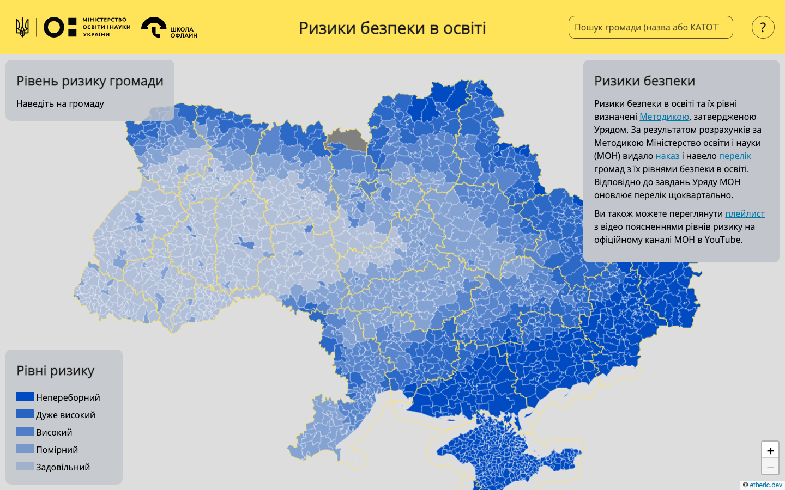
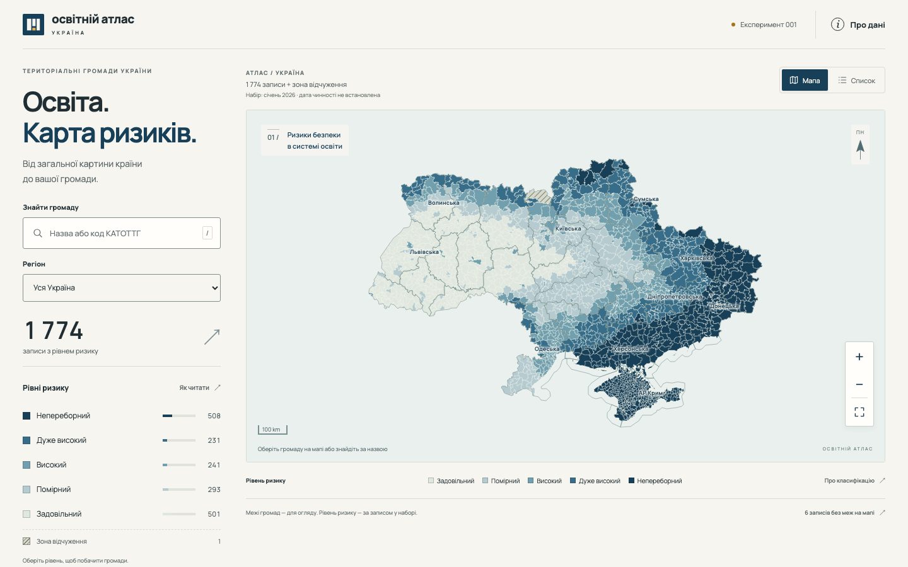
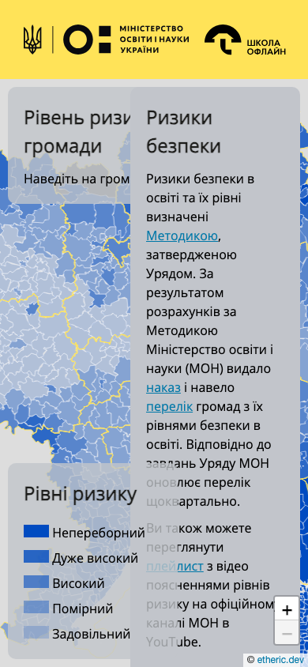
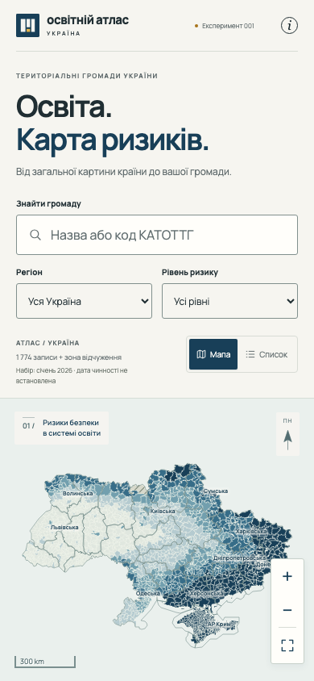
Replayable Playwright traces include interactions, timestamps, DOM snapshots and screenshots from continuous desktop and mobile journeys. The local replay command is in RETURN.
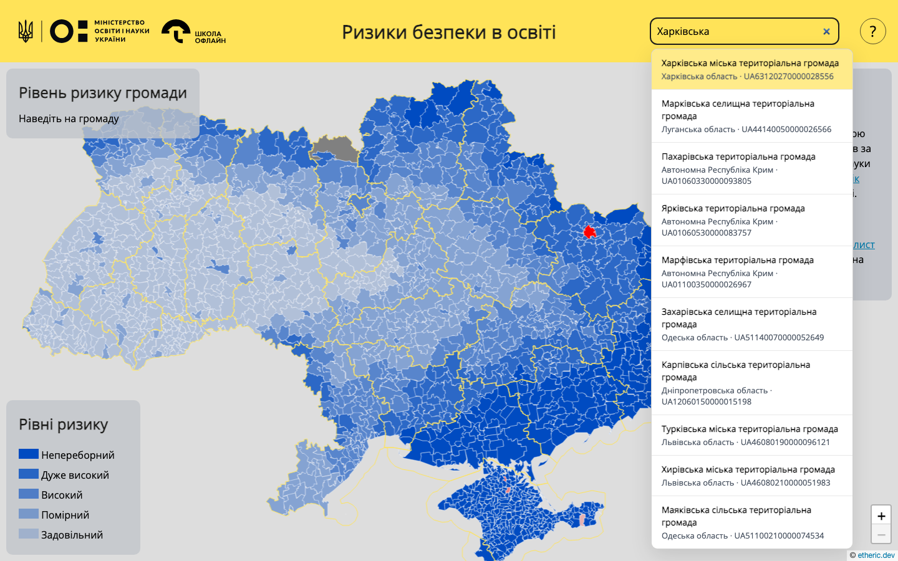
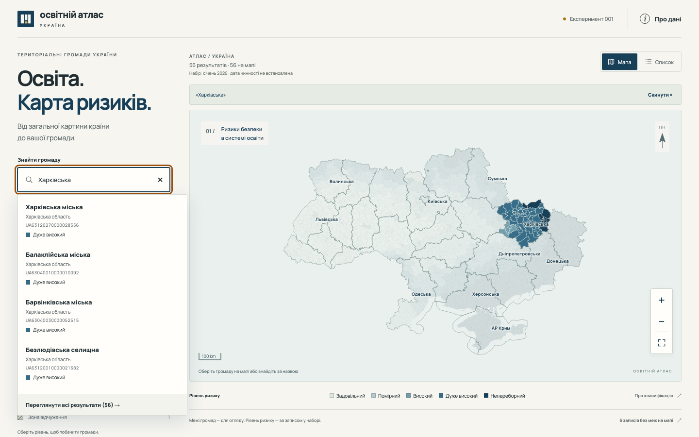
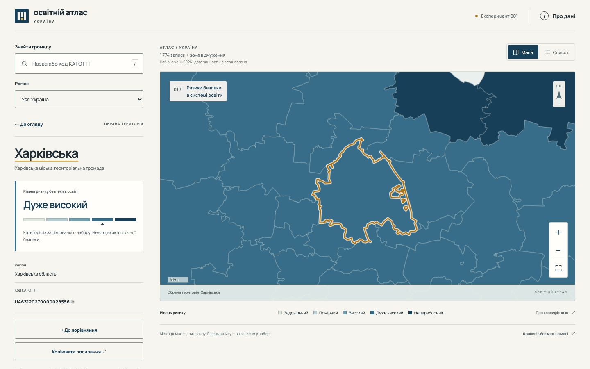
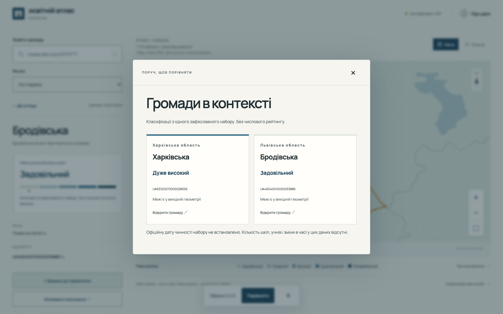
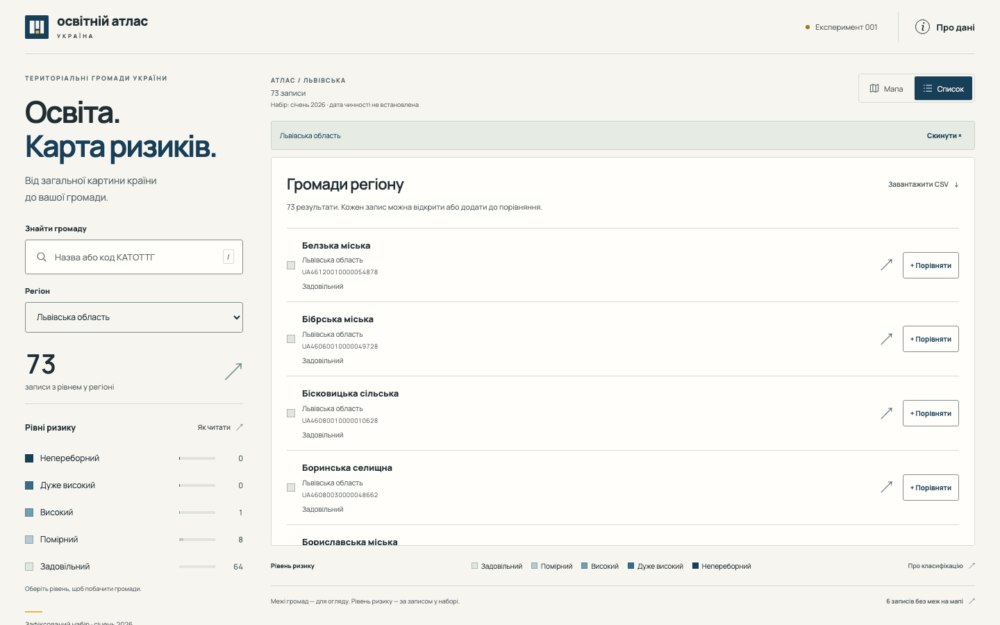
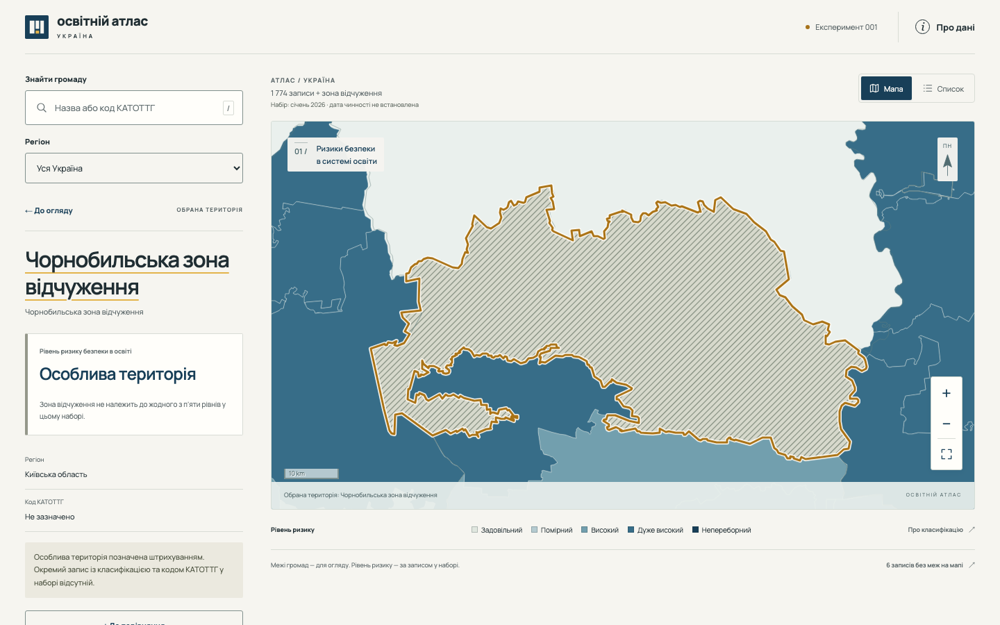
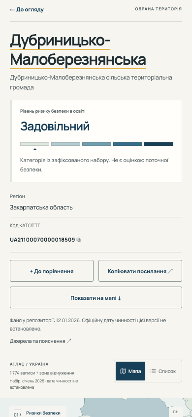
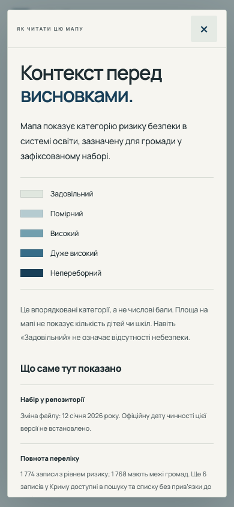